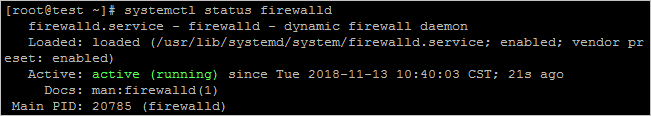
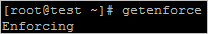
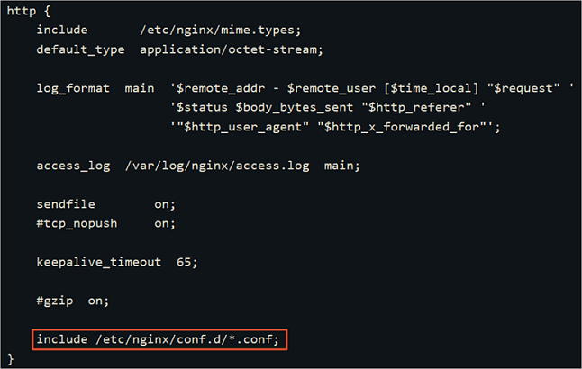
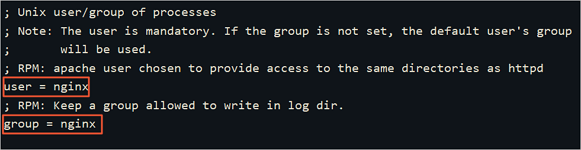
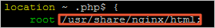
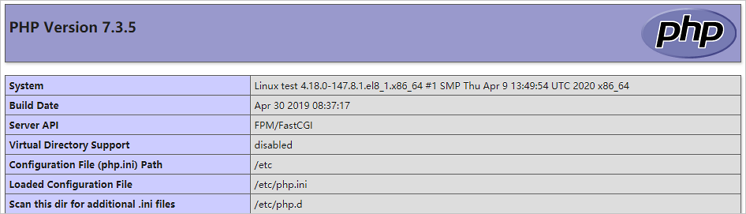

本教程介绍如何手动在 ECS 实例上搭建LNMP环境（CentOS 8），其中 LNMP 分别代表Linux、Nginx、MySQL 和 PHP。
前提条件
- 已注册阿里云账号。如还未注册，请先完成 账号注册。
- 已完成实名认证。如还未认证，请先完成 实名认证。
- 已创建 ECS 实例并为实例分配公网 IP 地址，具体操作请参见 创建方式导航。
- 已在实例安全组的入方向添加安全组规则并放行 80 端口。具体操作请参见 添加安全组规则。
背景信息
CentOS 8 版本的操作系统中默认安装了 DNF 软件包管理器，是 YUM 软件包管理器的下一代版本。您可以在 CentOS 8 系统中运行 dnf 命令获取相关的使用说明。
本教程适用于熟悉 Linux 操作系统，刚开始使用阿里云进行建站的个人用户。
您也可以在 云市场 购买 LNMP 镜像直接启动 ECS 实例，以便快速建站。
本篇教程在示例步骤中使用了以下配置的 ECS 实例，实例规格为 ecs.c6.large。实际操作时，请以您的实例配置为准。
- CPU：2 vCPU
- 内存：4GiB
- 网络类型：专有网络VPC
- IP地址：公网IP
使用限制
操作系统及软件版本如下所示。当您使用不同软件版本时，可能需要根据实际情况调整命令和参数配置。
- 操作系统：公共镜像 CentOS 8.1 64位
- Nginx版本：Nginx 1.16.1
- MySQL版本：MySQL 8.0.17
- PHP版本：PHP 7.3.5
操作步骤
- 准备编译环境
- 安装 Nginx
- 安装 MySQL
- 安装 PHP
- 配置 Nginx
- 配置 MySQL
- 配置 PHP
- 测试访问 LNMP 平台
- 后续步骤
准备编译环境
远程连接 Linux 实例。
关闭防火墙。
运行
systemctl status firewalld命令查看当前防火墙的状态。
- 如果防火墙的状态参数是 inactive，则防火墙为关闭状态。
- 如果防火墙的状态参数是 active，则防火墙为开启状态。本示例中防火墙为开启状态，因此需要关闭防火墙。
关闭防火墙。如果防火墙为关闭状态可以忽略此步骤。
如果您想临时关闭防火墙，运行命令
systemctl stop firewalld。
如果您想永久关闭防火墙，运行命令
systemctl disable firewalld。说明
如果您想重新开启防火墙，请参见 firewalld官网信息。
关闭 SELinux。
运行
getenforce命令查看 SELinux 的当前状态。
- 如果 SELinux 状态参数是 Disabled，则 SELinux 为关闭状态。
- 如果 SELinux 状态参数是 Enforcing，则 SELinux 为开启状态。本示例中 SELinux 为开启状态，因此需要关闭 SELinux。
关闭 SELinux。如果 SELinux 为关闭状态可以忽略此步骤。
如果您想临时关闭 SELinux，运行命令
setenforce 0。如果您想永久关闭 SELinux，运行命令
vim /etc/selinux/config编辑 SELinux 配置文件。回车后，把光标移动到 SELINUX=enforcing 这一行，按i键进入编辑模式，修改为 SELINUX=disabled，按Esc键，然后输入:wq并按Enter键以保存并关闭 SELinux 配置文件。说明
如果您想重新开启 SELinux，请参见 开启或关闭SELinux。
重启系统使设置生效。
安装 Nginx
运行以下命令安装 Nginx。
本教程将选用 Nginx 1.16.1 版本。说明
您可以访问 Nginx官方安装包 获取适用于 CentOS 8 系统的多版本的 Nginx 安装包。
1
dnf -y install http://nginx.org/packages/centos/8/x86_64/RPMS/nginx-1.16.1-1.el8.ngx.x86_64.rpm
运行以下命令查看 Nginx 版本。
1
nginx -v
查看版本结果如下所示。
1
nginx version: nginx/1.16.1
安装 MySQL
运行以下命令安装 MySQL。
1
dnf -y install @mysql
运行以下命令查看 MySQL 版本。
1
mysql -V
查看版本结果如下所示。
1
mysql Ver 8.0.17 for Linux on x86_64 (Source distribution)
安装 PHP
运行以下命令添加并更新 epel 源。
1
2dnf -y install epel-release
dnf update epel-release运行以下命令删除缓存的无用软件包并更新源。
1
2dnf clean all
dnf makecache启用
php:7.3模块。运行以下命令安装 PHP 相应的模块。
1
dnf install php php-curl php-dom php-exif php-fileinfo php-fpm php-gd php-hash php-json php-mbstring php-mysqli php-openssl php-pcre php-xml libsodium
运行以下命令查看 PHP 版本。
1
php -v
查看版本结果如下所示。
1
2
3PHP 7.3.5 (cli) (built: Apr 30 2019 08:37:17) ( NTS )
Copyright (c) 1997-2018 The PHP Group
Zend Engine v3.3.5, Copyright (c) 1998-2018 Zend Technologies
配置 Nginx
运行以下命令查看 Nginx 配置文件的默认路径。
1
cat /etc/nginx/nginx.conf
在 http 大括号内，查看 include 配置项。即配置文件的默认路径。

在配置文件的默认路径下，备份默认配置文件。
1
2cd /etc/nginx/conf.d
cp default.conf default.conf.bak修改配置文件。
运行以下命令打开默认配置文件。
1
vi default.conf
按
i进入编辑模式。在 location 大括号内，修改以下内容。
1
2
3
4
5
6location / {
#将该路径替换为您的网站根目录。
root /usr/share/nginx/html;
#添加默认首页信息index.php。
index index.html index.htm index.php;
}去掉被注释的 location ~ .php$ 大括号前面的 *#*，并修改大括号的内容。
1
2
3
4
5
6
7
8
9
10
11location ~ \.php$ {
#将该路径替换为您的网站根目录。
root /usr/share/nginx/html;
#Nginx通过unix套接字与PHP-FPM建立联系，该配置与/etc/php-fpm.d/www.conf文件内的listen配置一致。
fastcgi_pass unix:/run/php-fpm/www.sock;
fastcgi_index index.php;
#将/scripts$fastcgi_script_name修改为$document_root$fastcgi_script_name。
fastcgi_param SCRIPT_FILENAME $document_root$fastcgi_script_name;
#Nginx调用fastcgi接口处理PHP请求。
include fastcgi_params;
}按下
Esc键，并输入:wq保存退出文件。
运行以下命令启动 Nginx 服务。
1
systemctl start nginx
运行以下命令设置 Nginx 服务框架自启动。
1
systemctl enable nginx
配置 MySQL
运行以下命令启动 MySQL，并设置为开机自启动。
1
systemctl enable --now mysqld
运行以下命令查看 MySQL 是否已启动。
1
systemctl status mysqld
查看返回结果，
Active: active (running)表示已启动。运行以下命令执行 MySQL 安全性操作并设置密码。
1
mysql_secure_installation
运行命令后，根据命令行提示执行如下操作。
输入
Y并回车开始相关配置。选择密码验证策略强度，输入
2并回车。
策略0表示低，策略2表示中，策略3表示高。建议您选择高强度的密码验证策略。设置 MySQL 的新密码并确认。
本示例设置密码
PASSword123。输入
Y并回车继续使用提供的密码。输入
Y并回车移除匿名用户。设置是否允许远程连接 MySQL。
- 不需要远程连接时，输入
Y并回车。 - 需要远程连接时，输入
N或其他任意非Y的按键，并回车。
- 不需要远程连接时，输入
输入
Y并回车删除 test 库以及对 test 库的访问权限。输入
Y并回车重新加载授权表。
配置 PHP
修改 PHP 配置文件。
运行以下命令打开配置文件。
1
vi /etc/php-fpm.d/www.conf
按
i进入编辑模式。找到
user = apache和group = apache，将apache修改为nginx。
按下
Esc键，并输入:wq保存并退出文件。
新建 phpinfo.php 文件，用于展示 PHP 信息。
运行以下命令新建文件。
1
vim <网站根目录>/phpinfo.php #将<网站根目录>替换为您配置的网站根目录。
网站根目录是您在
nginx.conf文件中location ~ .php$大括号内配置的root值，如下图所示。
本教程配置的网站根目录为
/usr/share/nginx.html，因此命令为：1
vim /usr/share/nginx/html/phpinfo.php
按
i进入编辑模式。输入下列内容，函数
phpinfo()会展示 PHP 的所有配置信息。1
echo phpinfo();
按下
Esc键后，输入:wq并回车以保存并关闭配置文件。
运行以下命令启动 PHP-FPM。
1
systemctl start php-fpm
运行以下命令设置 PHP-FPM 开机自启动。
1
systemctl enable php-fpm
测试访问 LNMP 平台
在本地物理机打开浏览器。
在地址栏输入
http://<ECS实例公网IP地址>/phpinfo.php。
返回结果如下图所示，表示LNMP环境部署成功。
后续步骤
测试访问 LNMP 平台成功后，建议您运行以下命令将 phpinfo.php 文件删除，消除安全隐患。
1 | rm -rf <网站根目录>/phpinfo.php #将<网站根目录>替换为您在nginx.conf中配置的网站根目录 |
本教程配置的网站根目录为 /usr/share/nginx/html，因此命令为：
1 | rm -rf /usr/share/nginx/html/phpinfo.php |